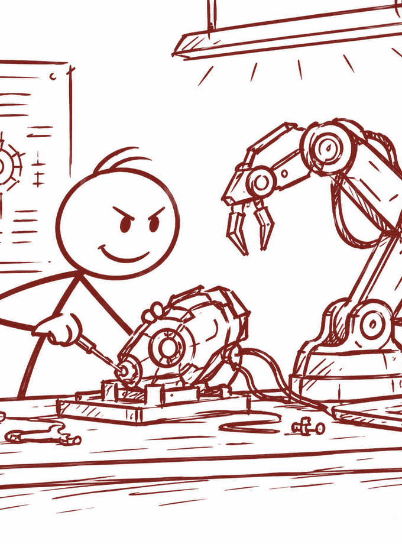

Machine Learning R&D
ICEYE, Helsinki
Geospatial ML

Summer 2026
Oct 2026 – now
Imperial College London
Control Systems (50006)
Feb 2026 – now
Karman Space Programme, London
Digital twins
Jul 2026
Y Combinator, San Francisco
Summer 2025
Cold Chain Technologies, London
Multimodal RAG
Jun 2025
2024 – 2028
Imperial College London
| Project | What it is |
|---|---|
| Autonomous waiter robot | A self-balancing robot that serves you drinks: LQR control, LiDAR SLAM, A* and DWA navigation, ArUco recalibration and a YOLO emergency stop, on an RPi 5 and ESP32s. |
| RISC-V CPU | Built a 5-stage RV32I pipeline with a set-associative data cache, forwarding, stalls and flushes, verified with Verilator testbenches. |
| FPGA-accelerated OneNote | A collaborative whiteboard with hardware gesture and shape recognition. A fixed-point MLP on the FPGA classifying 2.38× faster than software. |
| Conductor ICHack26 |
A low-cost, offline NFC system using a Raspberry Pi and OCR/TTS that turns physical spaces into audio-accessible environments for visually impaired people. |
| Emergency RF comms CGCU Hackathon |
A working emergency RF communication system that sends card-encoded signals and reads them back with LDR sensors. |
| Multi-threaded chat | A UDP chat server in C with POSIX threads, private messages, admin controls, keepalive pings and a min-heap for kicking idle clients. |
| On Fluid Flow | A model of how viscosity and pressure affect the flow of a Newtonian fluid. |